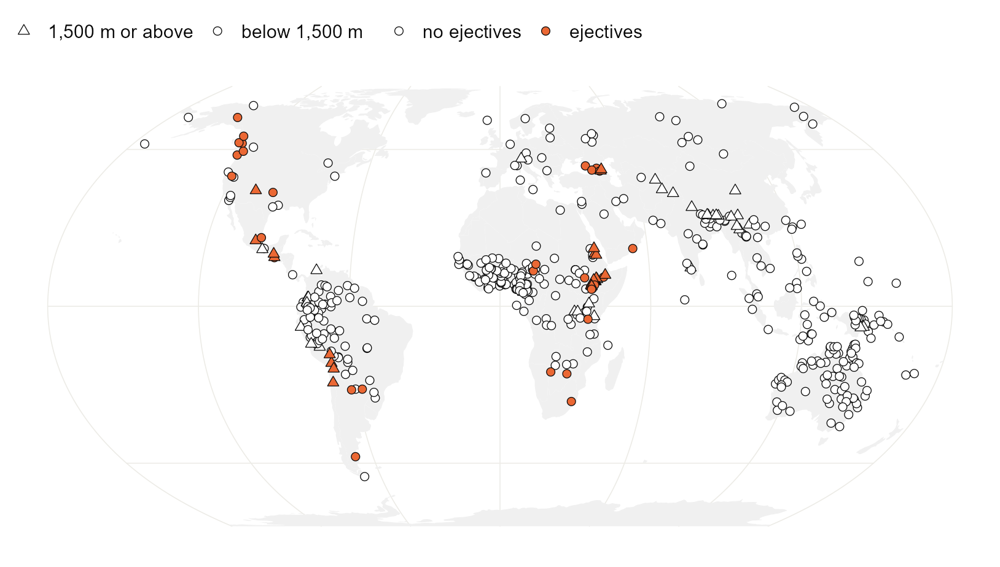

Welcome
These are follow-along R tutorials on modelling phylogenetic and spatial autocorrelation in cross-linguistic data. Every model is fitted with an existing package, with no custom Stan programs and no long data wrangling. Open R beside this page and type along.

Figure 0.1: The 500 languages used throughout. Filled symbols have ejective consonants; triangles sit at 1,500 m or above. Inventories from PHOIBLE 2.0, locations from Glottolog.
The map shows the problem. Languages with ejectives cluster in the Caucasus, the Ethiopian highlands, southern Africa, the North American Cordillera and the Andes. Neighbours share features through contact and relatives share them through inheritance, so 500 languages carry far less than 500 languages’ worth of independent evidence. A regression that ignores this is too sure of itself. The difficulty is Galton’s problem, as old as cross-cultural statistics (Naroll 1961), and it has produced a long list of spurious correlations in linguistics (Roberts and Winters 2013; Ladd et al. 2015).
Each chapter fixes that in one way, with one tool. They share a single running example, so the same slope can be followed from the first model to the last. Read them in order the first time; after that each one stands alone.
| Chapter | What it does | Fitted with |
|---|---|---|
| 1 Seeing the problem | The naive regression, and how often it cries wolf | base R, spdep, phytools |
| 2 Trees: the raw material | Reading, checking, pruning and building a language tree | ape, phytools |
| 3 Phylogeny as a covariance matrix | Family intercepts, then a phylogenetic random effect | brms |
| 4 Phylogeny in other engines | The same model in INLA and mgcv; PGLS and phylogenetic logistic regression | INLA, mgcv, phylolm |
| 5 Maps: coordinates, distances, neighbours | Distances, projections, neighbour graphs and weights | sf, spdep |
| 6 Space as a smooth surface | An approximate Gaussian process over the map | brms |
| 7 Space as a network of neighbours | ICAR and BYM2 on a neighbour graph | spdep, brms |
| 8 Space in other engines | BYM2 and a surface on the globe in INLA; a spline on the sphere; SAR | INLA, mgcv, spatialreg |
| 9 Both at once | Ancestry and geography in one model; every slope compared | brms |
| 10 Both at once in other engines | The joint model in INLA and mgcv; every structure in every engine | INLA, mgcv |
| 11 Other kinds of outcome | The joint model for a measurement, a count and ordered classes | brms |
| 12 Sampling instead of modelling | One language per family, and what it costs | base R |
| 13 Does it recover the truth? | Every method on simulated data with a known slope | nlme, phylolm, mgcv |
| 14 Where next | What these models leave out, and recent work on each gap | no code |
The book builds in the order phylogeny, space, both. Each of the three parts starts from the raw material, fits the model in brms where every piece is visible, and then repeats it in the faster engines.
Before you start
You need R 4.3 or later. Install the packages once. The first block covers the chapters that need no Bayesian engine; the others add the tree figures, brms and INLA.
install.packages(c("ape", "phytools", "phylolm", "nlme", "sf", "spdep",
"spatialreg", "rnaturalearth", "rnaturalearthdata",
"ggplot2", "mgcv"))
# two tree figures use ggtree, from Bioconductor
install.packages("BiocManager")
BiocManager::install("ggtree")
# brms compiles its models with Stan, through cmdstanr
install.packages("brms")
install.packages("cmdstanr",
repos = c("https://stan-dev.r-universe.dev", getOption("repos")))
cmdstanr::install_cmdstan()
# INLA lives in its own repository
install.packages("INLA", dependencies = TRUE,
repos = c(getOption("repos"),
INLA = "https://inla.r-inla-download.org/R/stable"))On Windows, cmdstanr needs Rtools; cmdstanr::check_cmdstan_toolchain() tells you whether yours is ready.
Every chapter starts by reading the same two files, straight from this site:
library(ape)
base <- "https://rehan-muh.github.io/tutorials/data/"
d <- read.csv(paste0(base, "languages.csv"))
tree <- read.tree(paste0(base, "glottolog_tree.nwk"))Each chapter has a link at the top to download its code as one R script. The figures use a small ggplot2 theme; your plots will show the same thing in ggplot’s default look. If you want them to match, download atlas_theme.R and source() it.
The running example
In 2013 Caleb Everett reported that languages spoken at high altitude are more likely to have ejective consonants (Everett 2013), sounds such as [kʼ] and [tʼ] made by compressing air above a closed glottis. The proposed reason is articulatory: thinner air makes the compression cheaper. The claim is a good teaching case because the raw association is strong, the mechanism is plausible, and the data are the kind where relatives and neighbours can manufacture a correlation by themselves.
The sample is 500 languages drawn at random from the 2,026 in PHOIBLE 2.0 (Moran and McCloy 2019) that Glottolog (Hammarström et al., n.d.) locates on the map. For each language the file has:
| Column | Meaning |
|---|---|
glottocode, name
|
Glottolog identifier and name |
family, macroarea
|
Top-level Glottolog family and macroarea |
lat, lon
|
Glottolog’s point location |
elevation |
Metres above sea level at that point, from ETOPO1 |
ejectives |
1 if the PHOIBLE inventory has at least one ejective consonant |
n_consonants, n_vowels
|
Sizes of the consonant and vowel inventories |
tone |
1 if the inventory lists tones |
The tree is Glottolog’s classification turned into a phylogeny. Each family is a clade shaped by Glottolog’s subgroups. Every level of the classification counts as one step, the family itself included, and all languages end at the same height, so two languages share as much of the tree as they share levels of classification. Families join only at the root: Glottolog makes no claim about relationships between families, so languages in different families share no history in this tree.
Three limits are worth knowing before you read any estimate off these pages. A language is one point, though its speakers occupy an area. The elevation is the height at that point on a grid of about two kilometres (Amante and Eakins 2009). And a classification with conventional branch lengths is a rough stand-in for a dated phylogeny. The tutorials teach the models; they are not a verdict on Everett’s hypothesis. For a fuller reanalysis with genealogical and areal controls, see Urban and Moran (2021).
The script that builds both files from the sources is make_data.R. The files themselves are languages.csv and glottolog_tree.nwk.
Further reading
Each chapter ends with its own list. Four books cover the ground under all of them.
- McElreath (2020) builds multilevel models, Gaussian processes and phylogenetic regression from first principles, in the same Bayesian style as the brms chapters here.
- Banerjee et al. (2014) is the standard reference for hierarchical spatial models, point-referenced and areal.
-
Wood (2017) is the book behind
mgcv, and Krainski et al. (2019) the book behind the SPDE approach in INLA. - For the typological side of the argument, start with Ladd et al. (2015) on correlational studies and Guzmán Naranjo and Becker (2022) on bias control.
Sources
- Moran, Steven and Daniel McCloy (eds.) 2019. PHOIBLE 2.0. Jena: Max Planck Institute for the Science of Human History. CC BY-SA 3.0.
- Hammarström, Harald, Robert Forkel, Martin Haspelmath and Sebastian Bank. Glottolog. Leipzig: Max Planck Institute for Evolutionary Anthropology. CC BY 4.0.
- Amante, Christopher and Barry Eakins 2009. ETOPO1 1 arc-minute global relief model. NOAA. Public domain.
- Everett, Caleb 2013. Evidence for direct geographic influences on linguistic sounds: the case of ejectives. PLoS ONE 8(6): e65275.
These tutorials are a companion to Modeling spatial and phylogenetic autocorrelation in linguistic typology by Muhammad Rehan.